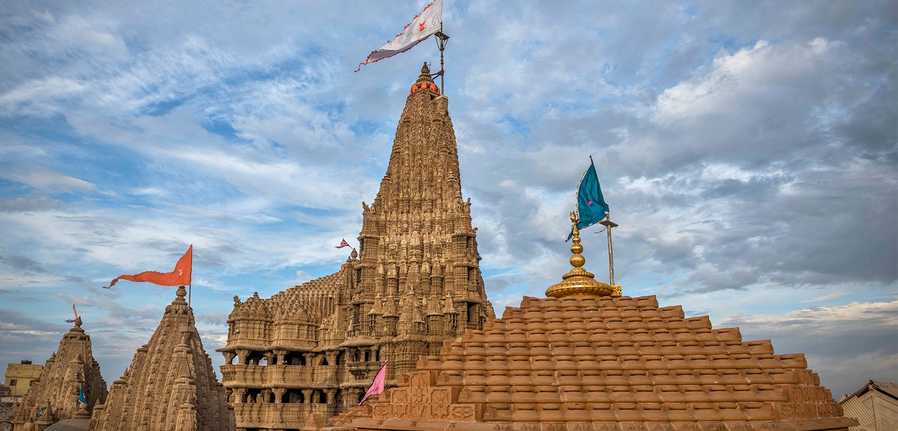
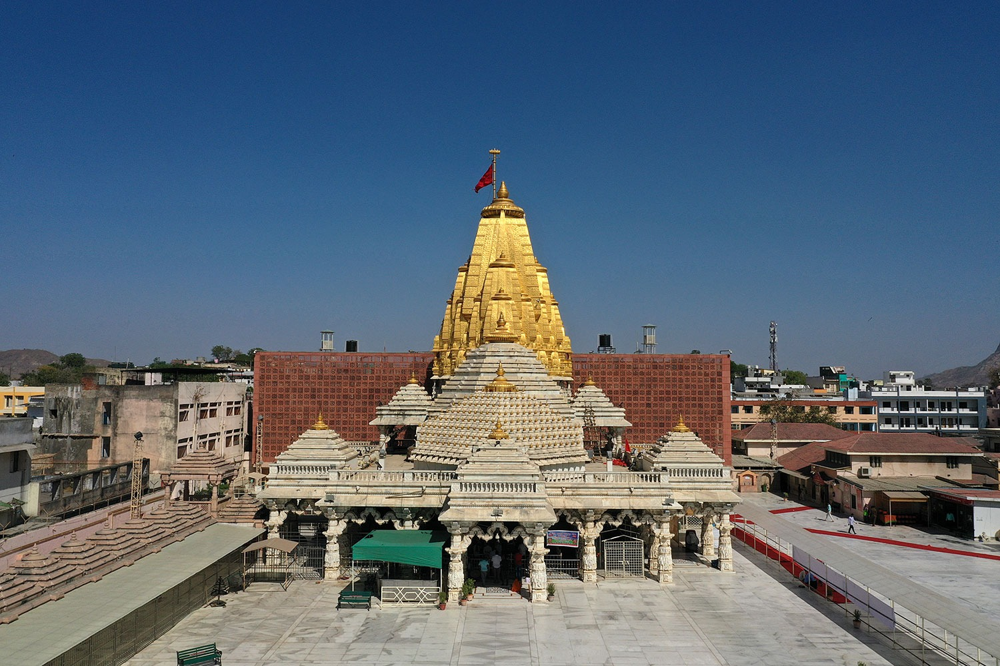
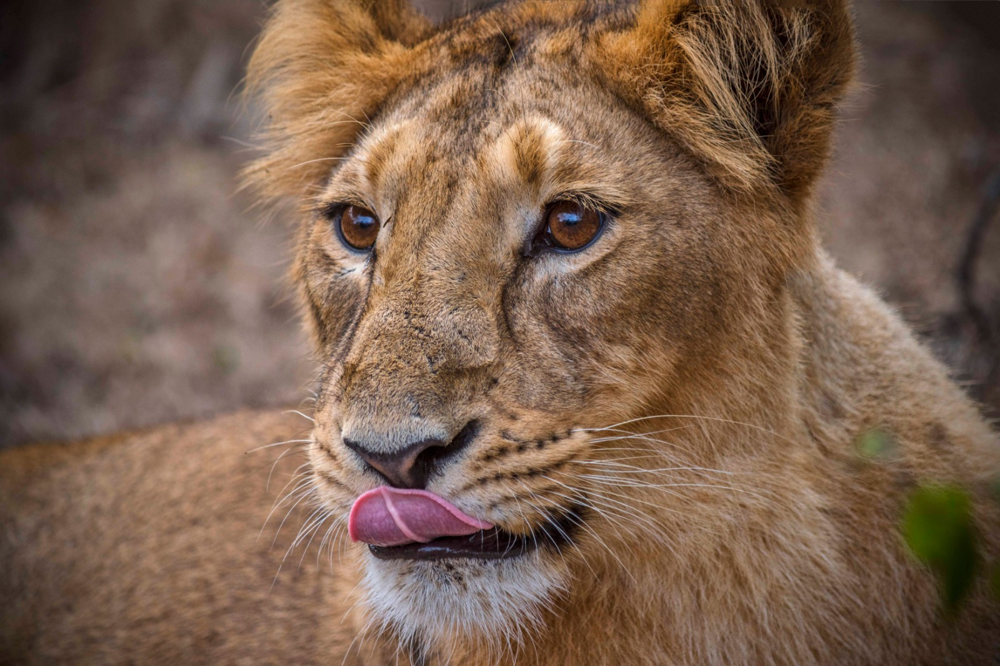
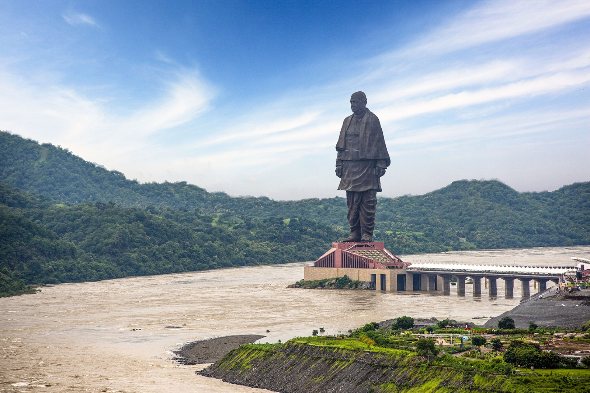
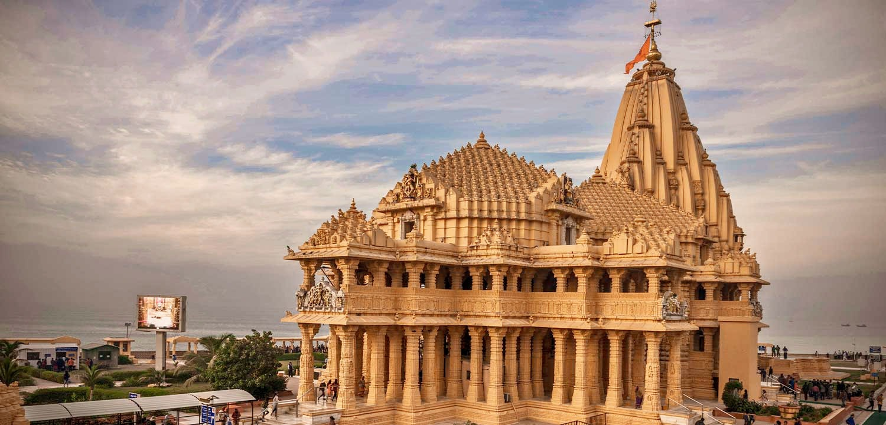
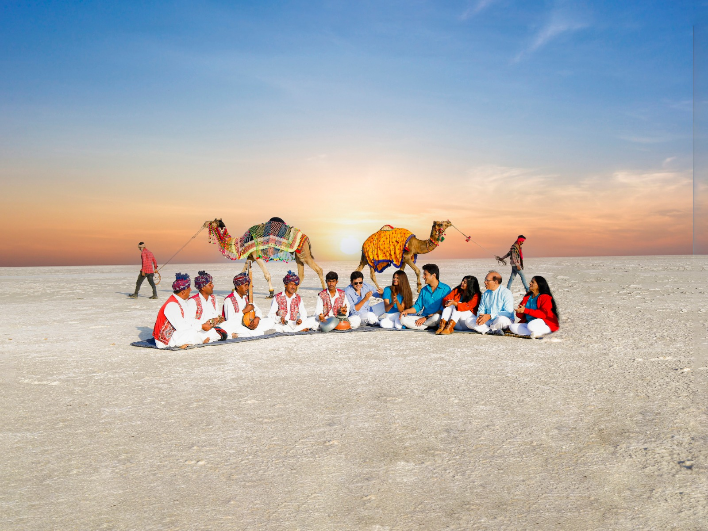
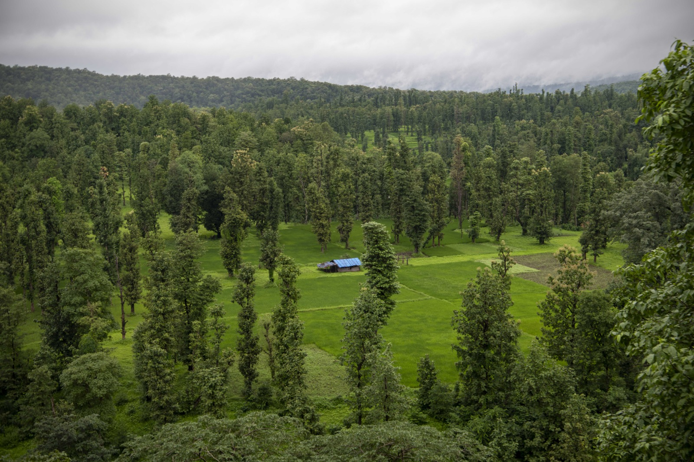

A Journey Through Culture, Nature, and Heritage

Polo Forest is a beautiful ancient site located near Vijaynagar. It is famous for its lush greenery, trekking trails, and the ruins of ancient Hindu and Jain temples dating back to the 15th century. It is a perfect getaway for nature lovers and history enthusiasts.

Also known as the Jagat Mandir, this temple is dedicated to Lord Krishna. It is one of the Char Dham pilgrimage sites. The 5-storied main shrine is supported by 72 pillars and is a magnificent example of Chalukya architecture.

Located in the Aravalli hills, Ambaji is a major Shakti Peeth. Uniquely, there is no idol of the goddess here; instead, devotees worship the Vishwa Yantra. The temple shines with its golden spire and is a major pilgrimage destination.

Gir is the only natural habitat of the majestic Asiatic Lions in the world. Apart from lions, the park is home to leopards, deer, and over 300 species of birds, making it a top destination for wildlife safaris.

A UNESCO World Heritage site, this intricate stepwell was built by Queen Udayamati. Designed like an inverted temple, it highlights the sanctity of water and features hundreds of delicate sculptures of deities.

Standing at 182 meters, this is the tallest statue in the world, dedicated to the Iron Man of India, Sardar Vallabhbhai Patel. Located on the Sadhu Bet island near the Sardar Sarovar Dam, it offers a stunning view of the Narmada river.

Located on the western coast of Gujarat, Somnath is believed to be the first among the twelve Jyotirlinga shrines of Shiva. It is known as the "Shrine Eternal" because it has been destroyed and rebuilt many times in history.

One of the largest salt deserts in the world, the Great Rann is famous for its white landscape that sparkles under the moonlight. It is the host of the famous Rann Utsav, celebrating the culture and crafts of Kutch.

This iconic pedestrian footbridge over the Sabarmati River is named after former PM Atal Bihari Vajpayee. Its unique design is inspired by kites, celebrating the city's love for the Uttarayan festival.

Saputara is the only hill station in Gujarat, located in the Dang district. Surrounded by lush green forests and waterfalls, it is a popular spot during the monsoon season for its misty landscapes and cool weather.

Dedicated to the solar deity Surya, this 11th-century temple is a masterpiece of Chalukya architecture. It features an intricately carved stepwell (Surya Kund) and a magnificent assembly hall.